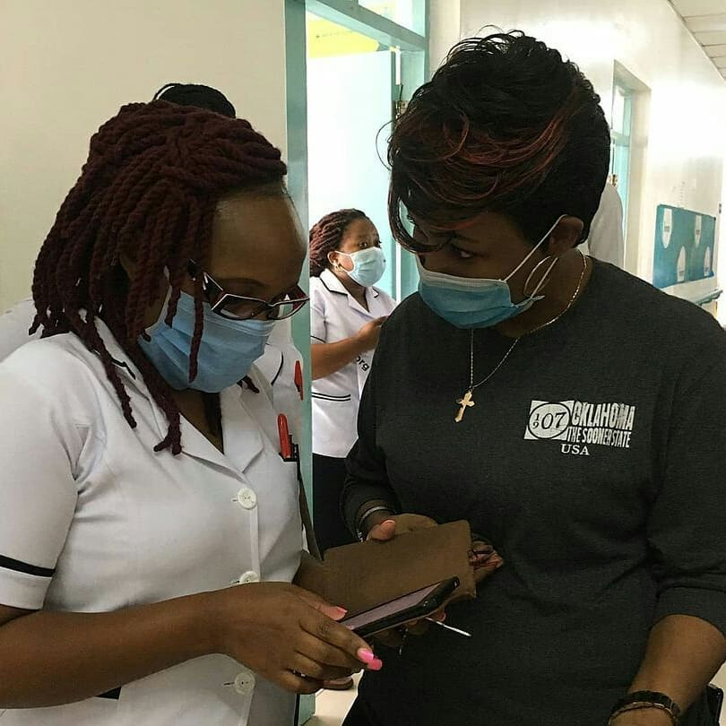
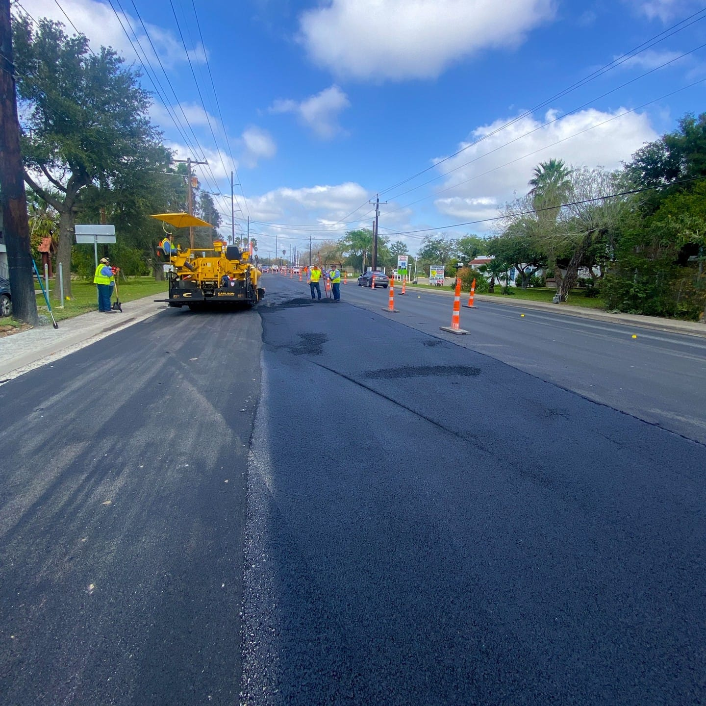
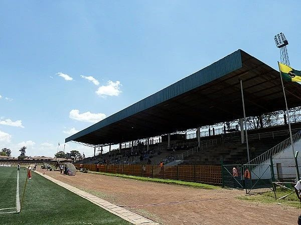
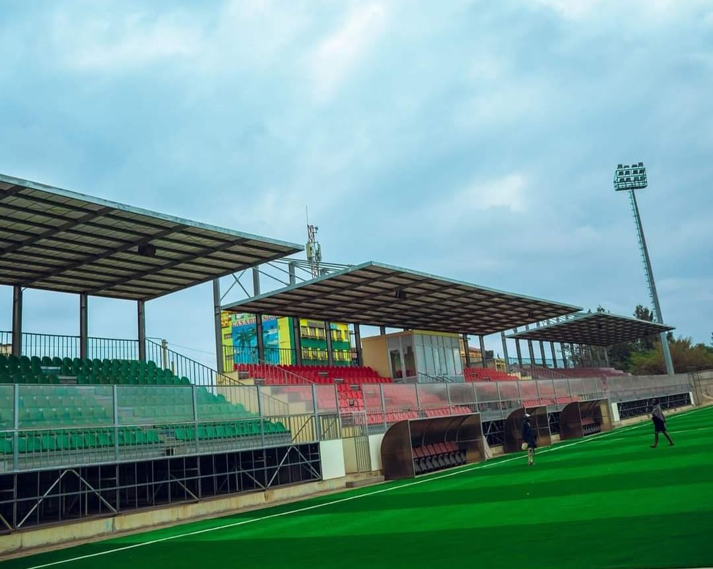

Mama Lucy Eye Hospital
Nairobi: 4th November, 2024 The first public eye hospital in Kenya, Nairobi and East Africa. Attended to 5,000 clients, operated and restored sight of 300, issued 5000 spectacles for free.
School Feeding Program Approaching Completion
Nairobi -Sunday, 06 August 2024 Nairobi County is on course to deliver meals for for the 250,000 children in public schools from 10 central kitchens at the end of August.

COMMISSIONING OF GALOLE STREET ROAD
Nairobi, 21st July, 2024 Last week saw the handing over of the completed 320M Galole street road in Eastleigh’s Airbase ward, Kamakunji sub county to Nairobi County Executive for Roads,.

CITY STADIUM RENOVATIONS
The rehabilitation of city stadium is on track and taking off at a good start. A visit to the stadium by the County Executive Committee Member for Education,Sports,Culture,Youth and Social..
Kangundo Road Fire-Station
Nairobi City County is finalizing construction of the Kangundo road fire station that will boost its emergency response especially in Eastlanda area. The County administration has streamlined the disaster management.

Construction Of Dandora Stadium
Ongoing construction of the new Dandora Stadium in Embakasi North Sub-County.
The county administration is striving to ensure the project is completed by July, 2019 in order to give the youth a chance to nurture their talent at the state-of -the-art sports facility. The new Dandora Stadium will have notable features like; artificial turf, seats, a gym centre, modern stalls and floodlights..